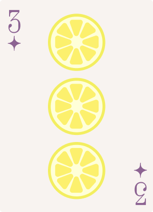

Congressional App Challenge

LemonAid is an educational app prototype I designed for the Congressional App Challenge alongside my teammates. I created the app's interface and interactive screens in Figma, including quizzes, subject selection, and a reward meter to make learning more engaging for elementary school students. This project gave me the opportunity to explore UI/UX design and turn an idea into an interactive prototype.
Skills: C#, Unity, Perseverance
This is the promotional video we created for LemonAid, our Congressional App Challenge submission. I wrote the script with input from my teammates and helped guide the filming process by sharing ideas and giving creative feedback. It was a great opportunity to work collaboratively and bring our app concept to life through video.
Skills: C#, Unity, Diligence
Unity

Monkey Business! is one of the first games I made in my sophomore year. You play as Froggalina and roll to collect all the bananas before George the monkey can eat them all! It was my first ever submission to Games For Change and it was a huge learning curve for me in 3D game development, since it was my first time using C#.
Skills: C#, Unity, Perseverance

Space Blaster! is a more recent project of mine. It’s a sci-fi take on road safety where you ‘drive’ in outer space and fend against aliens! Another submission to Games For Change, it was my first time trying to build a 2D game. I had a lot of fun making the maps for this one, and overall just had a blast (pun intended)!
Skills: C#, Unity, Diligence

Rainforest Ranger to the Rescue! is my latest release. It is a 2D platformer where you play as Randy, putting out fires, collecting seed samples, and dodging venomous snakes! It's a game I'm really proud of, as despite making it in a time crunch, the UI turned out way better than I expected.
Skills: C#, Unity, Tile Map, Resourcefulness
INFY App Challenge

This is the website for the app NextStep, a product of me and my team. We submitted this for the INFY App Challenge 2026, working from Februrary to May ideating, drafting, and finalizing our app. This was truly such an impactful experience for me since I go to learn so much.
Skills: App development, Figma, Collaboration, HTML, CSS
This is the slideshow we made for NextStep. It contains our statement, research, and goes more in-depth with our design process. We used it for our presentation in the semifinals.
Skills: Canva, Researching
This is the actual Figma prototype of NextStep! I created the UI with some help from my team and animated it, all using Figma. We wanted to tackle the issue of youth unemployment and create an accessible solution for teens and young adults.
Skills: Figma, UI, UX, Communication, Designing
Earsketch

This is a ringtone I made using Earsketch. I used python to create various functions using the pre-provided sounds. This was a super interesting endeavor for me, since I am not one to make music. However, the learning process really did teach me a lot.
Skills: Earsketch, Python, Creativity
Another project I made in Earsketch, this is a Holiday Remix! The user can set the tempo, which changes the feel of the song. I had a lot of fun with this one, since I had gotten the hang of the music making process through code when I created this.
Skills: Earsketch, Python, Organization
Python

An arcade I made using different functions! There are four different games: Coin Flip, Make-Your-Own-Story, Hangman, and Rock-Paper-Scissors. Each one depicts the skills I learned in Python. Originally, I worked on it with a group. I then revised the code to my liking!
Skills: Python, Teamwork, Adaptability
My first time drawing with Python! My program prompts the user by asking if they like snow or not, and depending on their answer, the final drawing will reflect their preference! I struggled a lot with this drawing, since it was my first time drawing something more complex than a smiley-face, but I'm really proud of the end result!
Skills: Python, Creativity, Planning
This is my holiday drawing, but improved! It has the same prompt as before, but now, the snow moves and the ornaments change colors. This was really fun and it taught me so much about animating with Python.
Skills: Python, Animation